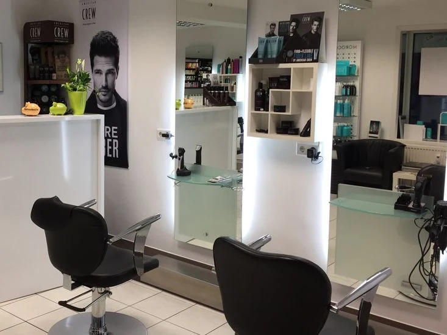

Ihr Friseur
in Giesing.
Bahar ist Friseurmeisterin und steht seit zwanzig Jahren in München hinter dem Stuhl. Farbe, Schnitt, Hochsteckfrisuren, und das komplette Brautstyling: Haar und Make-up aus einer Hand.
Perlacher Straße 2 · München-Giesing
Acht Blätter.
Jede Farbe an einer echten Arbeit gemessen.
Bei der Beratung liegt die Farbkarte auf dem Tisch: auffächern, anhalten, vergleichen. Hier ist sie die Preisliste. Ziehen Sie ein Blatt heraus: Der Ton an der Spitze stammt nicht aus einem Farbwähler, sondern ist aus dem Foto genau dieser Arbeit gemessen.

Balayage, ganzer Kopf
Mit Glossing, inklusive Schneiden & Föhnen
190 € kurz/mittel
230 € lang
Dauer etwa 180 Minuten
gemessen: Ansatz bis Länge, warmer Verlauf
Farbe oder Tönung
Mit Waschen und Trocknen. Ammoniakfrei und allergiefrei möglich: 49 € / 69 €
43 € kurz/mittel
59 € lang
Dauer etwa 90 Minuten
gemessen: warmes Mittelbraun
Foliensträhnen
Mit Trocknen. Inklusive Schneiden & Föhnen: 140 € / 160 €
69 € kurz/mittel
120 € lang
Dauer etwa 120 Minuten
gemessen: heller Strähnenton neben dunklem Grund
Glossing & Abmattierung
Korrektur unerwünschter Farbpigmente
30 € unabhängig von der Länge
gemessen: neutral statt warm — genau das ist der Zweck
Dauerwelle
Inklusive Schneiden und Föhnen: 95 € / 140 €
69 € kurz/mittel
95 € lang
Dauer etwa 120 Minuten
gemessen: goldblonde Locke
Keratin-Glättung
Die aufwendigste Behandlung im Haus
190 € kurz/mittel
250 € lang
Dauer etwa 180 Minuten
gemessen: glatte Länge, ruhiger Ton
Hochsteckfrisur
Für Feste, Bälle und Trauzeugentage
60–90 € nach Aufwand
gemessen: helles Blond im Steckwerk
Brautstyling
Hairstyling und Braut-Make-up zusammen, ein Termin, eine Person
390–600 €
gemessen: Brautfrisur mit Perlenranke
Alle Preise richten sich nach Haarlänge und Aufwand. Die typgerechte Beratung ist immer inklusive. Zur vollständigen Preisliste
Aus dem Salon
Aufnahmen aus dem Alltag in der Perlacher Straße, mit dem Telefon gemacht, während die Kundin noch auf dem Stuhl saß. Sie zeigen Struktur, Verlauf und Ansatz. Mehr braucht es nicht, um zu sehen, ob jemand Farbe kann.
Brautstyling
Haar und Make-up macht dieselbe Person, an einem Termin, im selben Raum. Das ist der Unterschied zum Hochzeitsmorgen mit drei Terminen an drei Orten — und der Grund, warum das Brautstyling die Arbeit ist, auf die dieser Laden am meisten Wert legt.
390–600 € Hairstyling und Braut-Make-up zusammen
Bahar
Fakhria Tokhi, im Laden alle nennen sie Bahar, ist Friseurmeisterin und arbeitet seit zwanzig Jahren in München. Der Salon in der Perlacher Straße gehört ihr — kein Filialleiter, keine Kette, keine wechselnden Aushilfen.
Was Kundinnen laut der bisherigen Seite besonders schätzen: dass ausführlich beraten wird, bevor die Schere angesetzt wird. Bei Farbbehandlungen gehört eine Kopfhautanalyse dazu. Steht das Ergebnis fest, steht auch der Preis fest.
Zwanzig Jahre hinter dem Stuhl, der Meisterbrief von der Handwerkskammer für München und Oberbayern, und Augenbrauen in Fadentechnik, die nicht jeder Salon in Giesing anbietet.

Perlacher Straße 2
- Öffnungszeiten
-
- Montag 10:00 – 16:00
- Dienstag bis Freitag 09:00 – 19:00
- Samstag 09:00 – 16:00
- Sonntag geschlossen
- Anschrift
-
BaHaar’s Styling Studio
Perlacher Straße 2
81539 München-Giesing